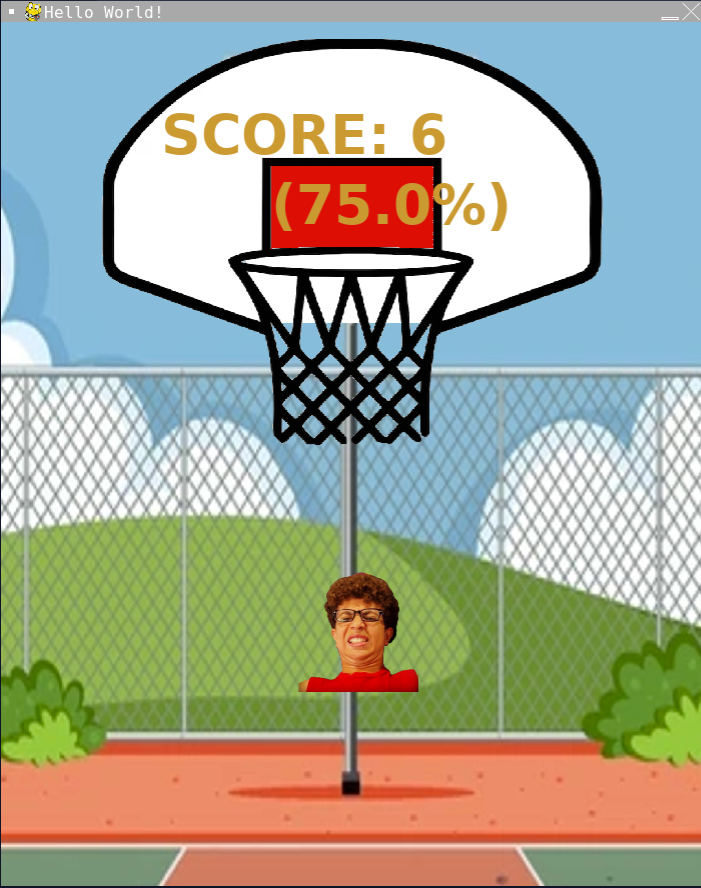

Basketball Shooter
The main components of the game include a background court image, a player-controlled image (img) that can be moved using the mouse, and a ball that is launched when the space bar is pressed. The score, percentage of successful shots, and miss count are displayed on the screen. The player's goal is to hit the red scoring rectangle with the launched ball. When the ball intersects with the red scoring area, the player's score increases. If the ball collides with the green miss areas on the left or right, the miss count increases. The percentage of successful shots is displayed in real-time.
The game uses event handling to respond to user input. Pressing the space bar initiates the ball launch, and moving the mouse controls the position of the player's image. The game loop continuously updates the display, checks for user input events, and handles the ball's movement and collision detection. The game features a dynamic scoring system that provides feedback on the player's performance. The loop continues until the player closes the game window. You can visit the Github respository here